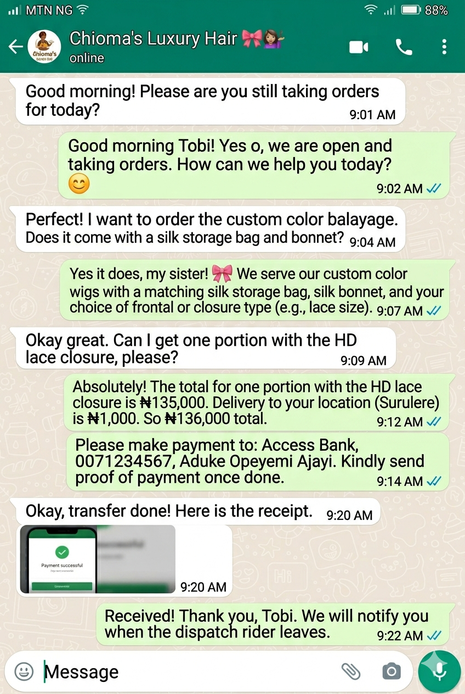

Programming
The Closer
A bot is only as smart as the script it runs on. If your bot sounds like a robot, the customer will ignore it. We are going to use AI to write a highly persuasive, energetic script that forces the customer to make a decision.

Traffic Segmentation
Amateurs treat every WhatsApp message the same. Digital-Preneurs segment their traffic. If a customer clicks an Instagram Ad for a specific wig, they shouldn't have to navigate a generic menu. They should get the price and payment link for that exact wig instantly.
To build a smart funnel, we need two separate entry scripts: The Ad Trigger (for specific ad traffic) and The Organic Trigger (a general menu for regular customers saying "Hello"). We will command Google Gemini to write both, perfectly formatted for a smartphone screen.
The Execution
Turning Google Gemini into a Direct-Response Scriptwriter.
The Master Prompt
"Act as an expert WhatsApp Sales Closer. My client Chioma runs a
premium human hair business in Lagos. Write two short, energetic,
emoji-rich WhatsApp auto-responder scripts:
1. The Ad Script: To reply to people asking about
the new 'Bone Straight' ad. Give them the price (₦250k), create
urgency, and give a clear payment instruction.
2. The Organic Menu: A greeting for people who just
say 'Hello'. Create a numbered menu (1 for Wigs, 2 for Bundles, 3
for Delivery Info). Keep sentences short and optimized for mobile
reading."
Paste this prompt into Google Gemini. Watch it generate human-sounding sales copy.
Ensure the output uses bullet points and emojis. People skim WhatsApp messages, they do not read paragraphs.
Copy the finalized scripts into a basic notepad. This is the 'Brain' we will inject into our bot in Phase 3.